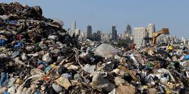
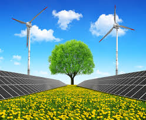

Save Our Ecosystem
Ecosystem is a system in which living and non-living components interact. It can also be described as a community of organisms that live together along with the non-living things. Community can have different meanings depending on the context of a topic. Here, community is simply a group of different species living in a system.

The study of relationship between living and non-living components present in the ecosystem is called ecology. In ecology, living and non-living components are referred to as biotic and abiotic components respectively. Biotic components include humans, wild animals, birds, plants, microorganisms. Abiotic components include air, water, soil and other physical and chemical stuffs available in the environment.
There are several types of ecosystem present in our environment and all the different ecosystems have different species of animals and external factors present in them. Examples of ecosystems are forest, mountains, deserts, grassland, seas, rivers, lakes, ponds. In every ecosystem, biotic components are dependent on abiotic components for resources.
How To Save Our Ecosystem
Main Saving Methods
- Save forests
We can maintain earth's temperature and also prevent soil erosion by growing more and more trees. That can be done either by re growing the trees in weathered lands (reforestation) or by growing new trees in barren lands (afforestation) or any other required place. We need to stop deforestation. This is a pretty cool idea, and essentially does what it says on the tin: stops the cutting down of trees. This helps us minimize the use of wood and other forest produces; all you have to do is prepare a group and act against deforestation by planting lots and lots of trees. - Save Wildlife
Poaching has become very common these days, even though animal hunt in many wildlife parks is illegal. Strict actions should be taken against people who hunt down animals just for the sake of hunting or for trading their important body parts. And then, we can even stop eating certain kinds of meat. Slaughtering animals is so horrific, for example think of a chicken which is killed for its meat: its head is sliced with a knife and feathers taken off. Imagine that you were that chicken. How would it feel? Pretty terribel..... - Control over the discharge procedure of factories
Factories discharge harmful chemicals directly into nearby water bodies or the open lands. This causes water and soil pollution both. Many factory wastes are not treated properly and are just thrown away directly. The authorities should keep an eye on the discharge procedure of factories. - Categorization of garbage
Garbage categorization can help in dividing up the garbage and selecting those wastes which can be recycled. Biodegradable wastes do not cause harm to the environment. Categorization would minimize the wastes as well and would help maintain the ecological balance.  Clean Industries
Clean Industries
Developing more and more environment friendly industries will minize the pollutants produced by them.- Following measures on Global Warming
Global warming is not under the control of common people and it is the government's duty to take serious initatives and not just take parts in global summits for the sake of discussion alone. - Harzardous Chemicals should be banned for Household Purposes
People use DDT powder in most countries to kill insects and prevent them from getting inside their house. DDT is a very harmful chemical and its effect stay for a very long period of time affecting human health too. Many countries like the USA have already banned DDT. Alternative chemicals which are less harmful should be used. - Minimize the Use of Energy Resources
For this, we should controls the amount of electricity used in your homes as well as in our offices- switch off the lights and switches while not in use, and use CFL's in your house in order to save electricity. And don't only save electricity, but fossil fuels too. Think about it: switch off your engines at traffic lights and always look for any fuel lekage etc, because it will not only harm the ecosystem but you too. - Stop Pollution the Air, Water and Soil
For the past 100 years this has been the main reason for the destruction of the ecosystem. To help this issue refrain from throwing waste into water bodies, do not burn fuels, such as dry leaves, (the may give out posinous gases) and cut down the use of pesticides and other chemicals, which should be banned. Use eco-friendly sources, like Neem leaves, to keep away insects.